2015
DGI v 3.0
DGI (Desain Grafis Indonesia - Indonesian Graphic Design) is a collaborative organization focusing on the development of Indonesian graphic design by way of recording history, archiving artifacts, publishing knowledge, expanding discourse, granting awards, and other activities. DGI was founded on March 13, 2007 by a senior graphic designer, Hanny Kardinata. Starting out as a hobby in recording and collecting, DGI now acts as a data center, studies, and media on Indonesian graphic design scene.
In 2015, coinciding with its 8th anniversary, DGI launched a new site with several new features and improvements on browsing and reading experience.
—
discipline: Web Design
scope of work: Art Direction, Design
web development: Bitcribs
introduction video: M. Fahmi Himawan
work done under DGI (Desain Grafis Indonesia)
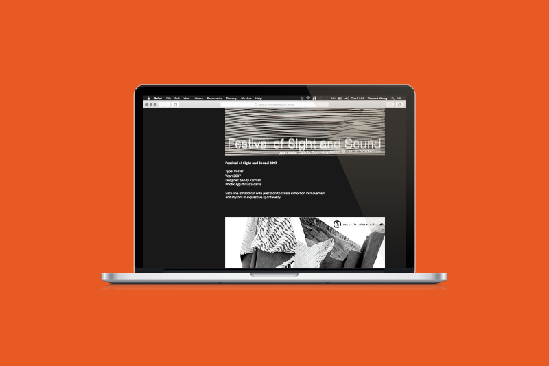
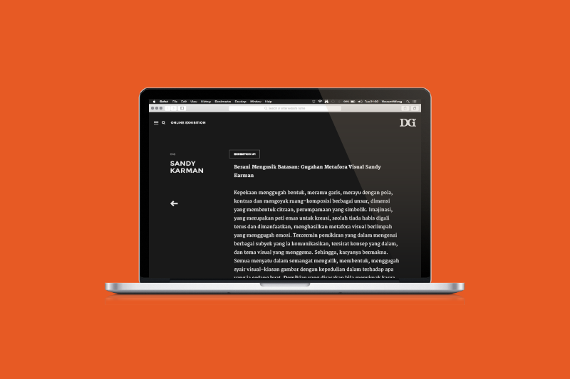
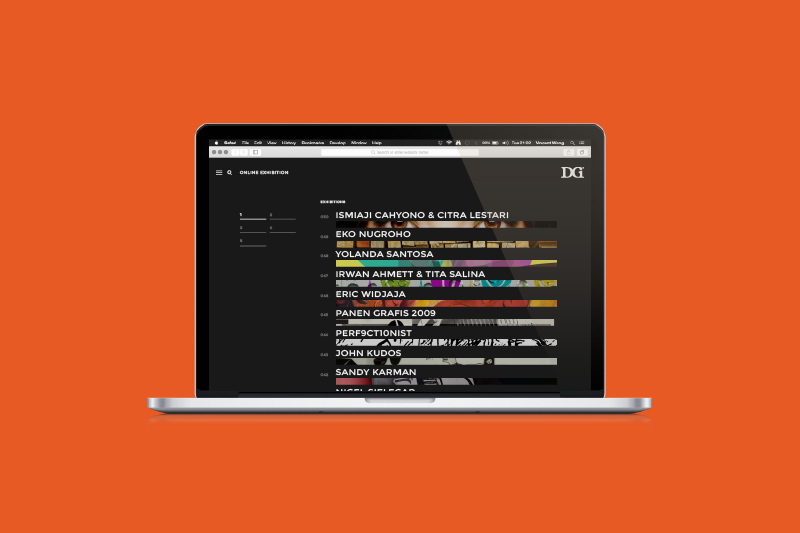
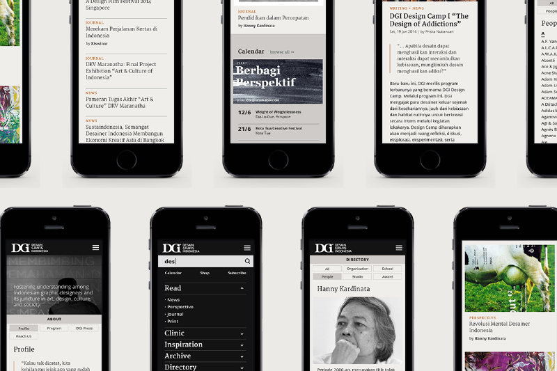
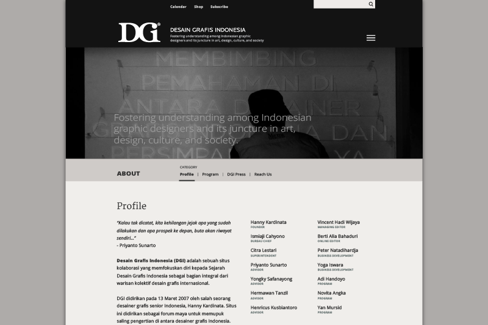
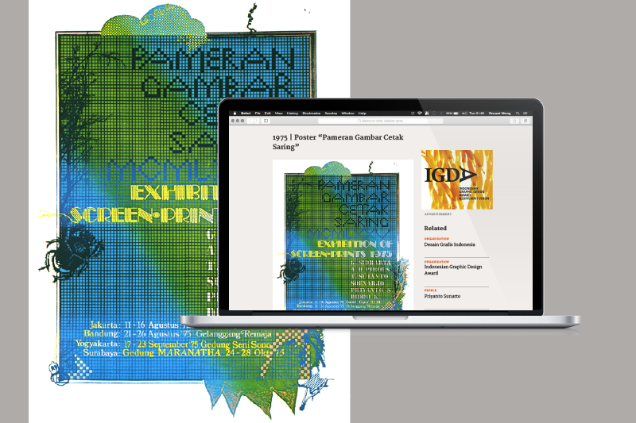
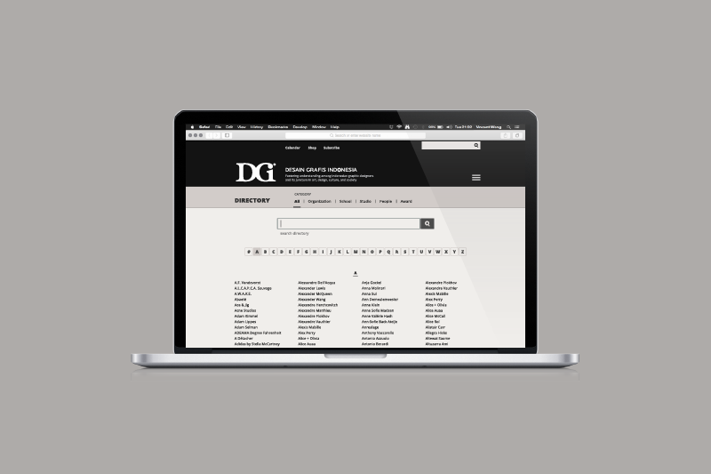
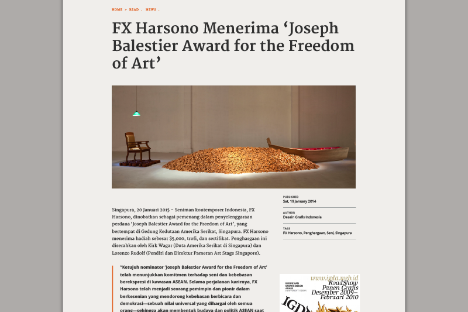
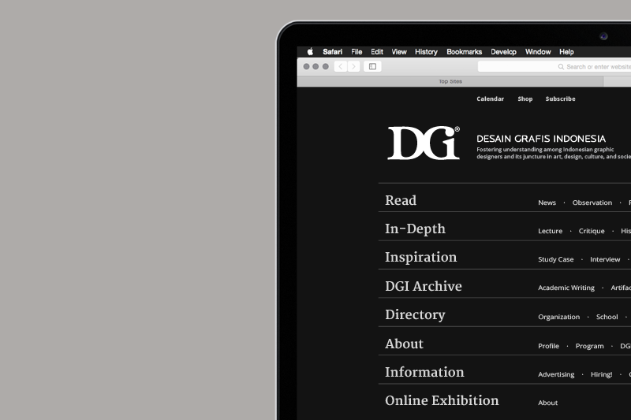
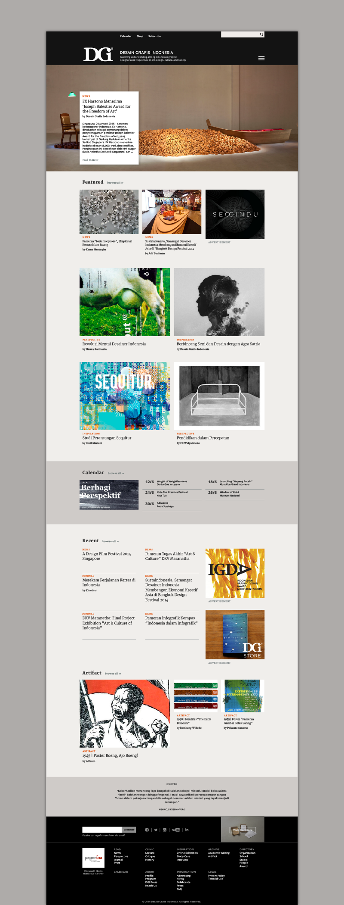
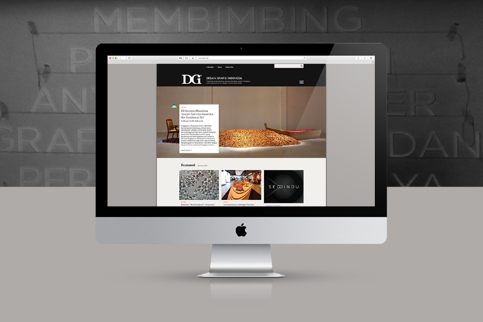